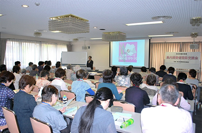
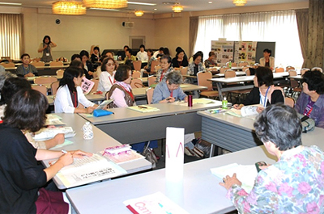

6月29日(月)、埼玉県委託事業第1回県内消費者団体交流会がさいたま市浦和区の埼玉会館2階ラウンジで開催され、22消費者団体67人が参加しました。
【参加団体】
伊奈町くらしの会、桶川市くらしの会、行田市くらしの会、久喜市くらしの会、西部地区消費者団体活動推進世話人会、志木市くらしの会、白岡市くらしの会、所沢市消費者団体連絡会、三郷市くらしの会、和光市消団連、埼玉県消費生活コンサルタントの会、埼玉消費者被害をなくす会、生活協同組合コープみらい、パルシステム埼玉、生活クラブ生協埼玉、埼玉県地域婦人会連合会、新日本婦人の会埼玉県本部、埼玉母親大会連絡会、さいたま市消団連、埼玉県生活協同組合連合会。埼玉公団住宅自治会協議会、埼玉県消費者団体連絡会

午前中の学習会では、講師に木原 孝久氏を迎え「住民には住民流の流儀がある ご近所パワーで助け合い起こし」をテーマに講演いただきました。はじめに、アイスブレークとして「あなたの『おつき合い』の流儀」を確認する10項目の○×テストを実施し、助け合いのためには日本人のおつき合いの常識について見直すことが必要なことを学びました。次に、助け合いを始めるために、住民流・助け合い-8つの原則を紹介され、自分や身内の抱えた問題を周囲にオープンにし助けられ上手になりましょうと話されました。

午後は、「 午前中の講演の感想交流
午前中の講演の感想交流  消費生活展などでの取り組み
消費生活展などでの取り組み  役員など、後継者の育成はどうしているの？
役員など、後継者の育成はどうしているの？  新会員募集はどうやっていますか
新会員募集はどうやっていますか  新しい取り組みの企画立案は、どうしていますか」のテーマで5つのグループに分かれての交流と各グループで話し合ったことを発表しました。
新しい取り組みの企画立案は、どうしていますか」のテーマで5つのグループに分かれての交流と各グループで話し合ったことを発表しました。